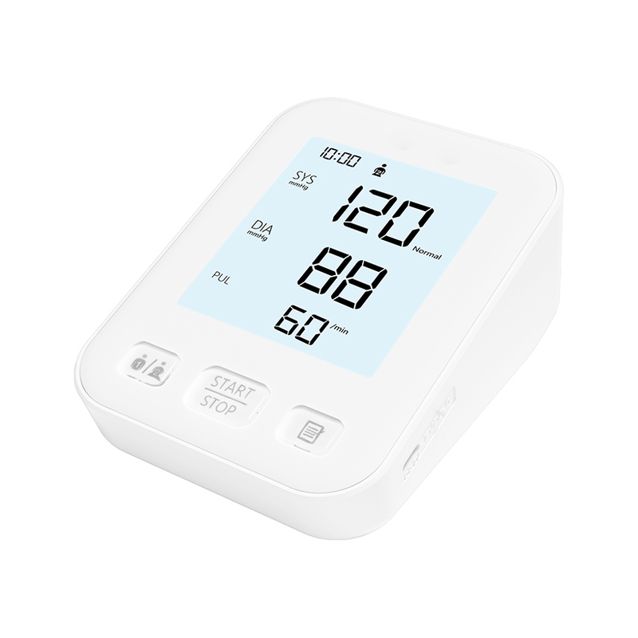

User Manual
Request the English manual for the model and configuration you are evaluating.
Request manual →The YP7202 is an upper-arm blood pressure monitor with a backlit LCD, voice readout and memory for two users. Review the cuff option, power requirements and project documentation.
Manufacturer: YimiLife · Quality management

Compare the listed parameters with your project requirements. Confirm the selected configuration and applicable documentation before planning samples.
| Specification | Details |
|---|---|
| Measurement | Oscillometric method Measurement during deflation Upper arm |
| Static pressure | Range: 0–290 mmHg Accuracy: ±3 mmHg* Resolution: 1 mmHg |
| BP display range | Systolic: at least 60–230 mmHg Diastolic: at least 40–130 mmHg |
| Pulse rate | Range: 40–199 bpm Accuracy: ±5% Resolution: 1 bpm |
| Cuff options | Adult arm circumference YM-C001A: 22–32 cm YM-C002A: 22–36 cm |
| Display & memory | LCD with backlight Voice readout 2 users × 120 records |
| Power supply | 3.7 V, 1200 mAh lithium battery Type-C input: 5 V, 1 A |
| Dimensions & weight | 138 × 102 × 61.5 mm (L × W × H) Approx. 340 g (excluding cuff) |
*Static pressure accuracy under the specified test conditions: 10–40°C and 15–85% RH, non-condensing. This specification refers to static pressure testing; it is not a clinical blood pressure accuracy result.
Start with the cuff option and target market. YP7202 combines a backlit LCD with a 3.7 V lithium battery and Type-C input; review labeling and documentation for the selected configuration.
Request files for YP7202, your selected configuration and target market. Document availability and regulatory scope must be confirmed for your project.
Request the English manual for the model and configuration you are evaluating.
Request manual →Ask which CE, FDA or NMPA documents apply to your model and target market.
Request documents →Review the product range and discuss other models for your sourcing project.
View catalog options →YP7202 has a backlit LCD. YP7201 has an LCD, and YP7101 has an LED display. Compare the listed configurations and confirm the selected model for your project.
The listed options are YM-C001A for an arm circumference of 22–32 cm and YM-C002A for 22–36 cm. Confirm the required cuff configuration with our team.
No. The ±3 mmHg specification is a static pressure test result under the stated conditions of 10–40°C and 15–85% RH, non-condensing. It is not a clinical blood pressure accuracy result.
Share your target market, preferred configuration and expected quantity.